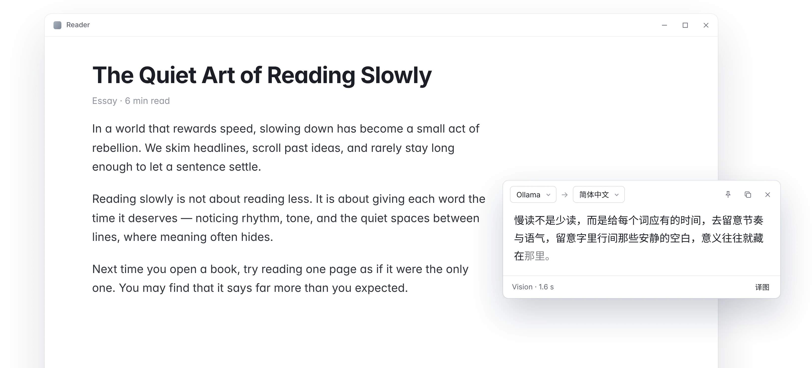
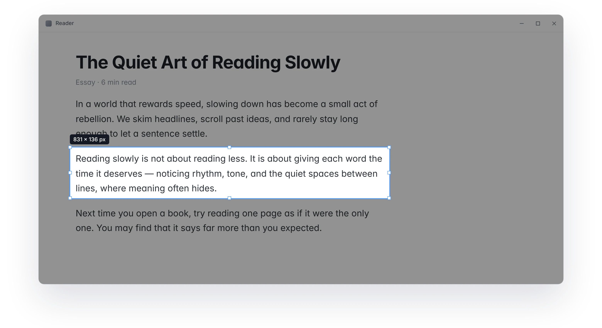
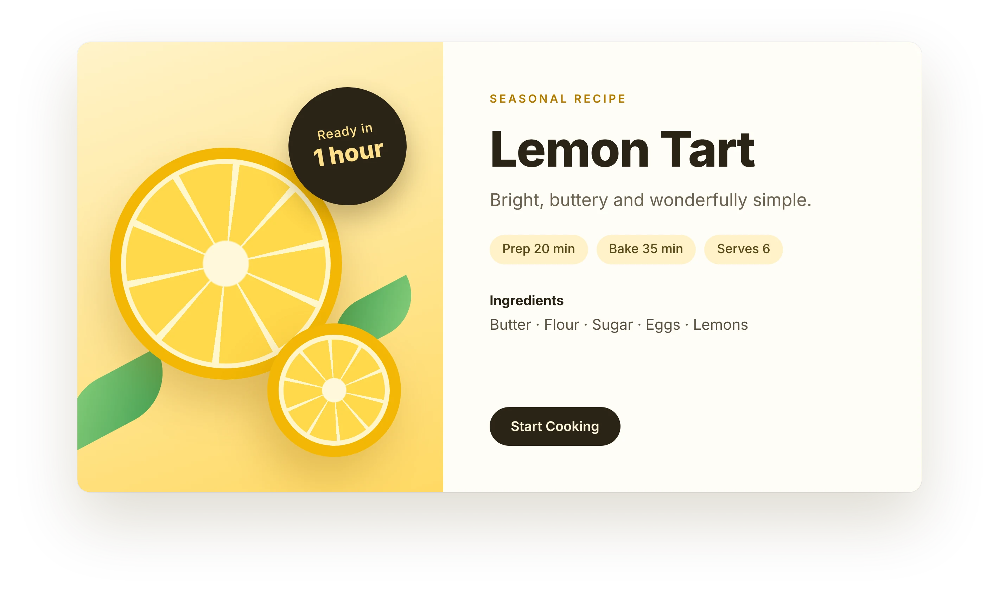
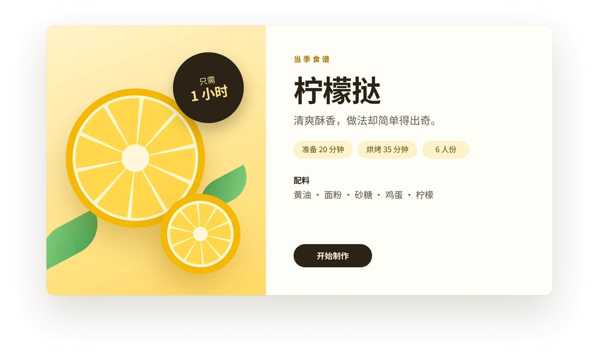
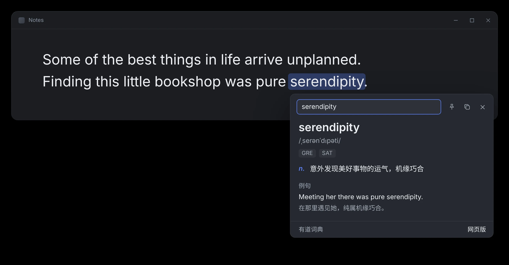

屏译 SnapTrans
看见，即懂。
框选屏幕上的任何文字，译文即刻呈现。
为 Windows 打造的截图翻译、译图与查词工具。
适用于 Windows 10 22H2 与 Windows 11 · x64 / ARM64

框选翻译
框选，即译。
按下 AltQ，框住网页、PDF、视频或游戏里的任何文字。译文在悬浮窗里逐字呈现，读完按 Esc 即可。

看图，或先识别
支持看图的模型直接读截图；其余模型先在本机识别文字再翻译，速度和费用由你取舍。
钉住，并排对照
按 Ctrl+P 钉住窗口，可同时保留多段译文；原文与译文还能左右并排。
随时换模型和语言
悬浮窗顶部直接切换模型与目标语言，44 种语言均可搜索选择。
原位译图
排版不变，只换语言。
按下 AltShiftQ，生成与原图同样尺寸的译图：抹去原文，按原来的位置与字号写入译文，并自动复制到剪贴板。


原图译图拖动滑块，对比原图与译图
查词
指哪，查哪。
把鼠标停在英文单词上，按下 AltW。音标、词性、释义、词组与例句，一张卡片全部呈现。无需配置模型。

两种取词方式
默认查询光标旁的单词；也可以在设置中改成先框选，再查询选中的词或短语。
两个词典来源
有道词典与 Google 翻译可选，“自动”模式下一个不可用时换用另一个。
卡片里继续查
在卡片的搜索框输入新的单词即可接着查，也能一键打开网页版查看完整释义。
三十五秒，了解屏译。
小巧，却周到。
任意模型
OpenAI 兼容接口、Anthropic 接口，或在本机运行的 Ollama 与 LM Studio。
本地识别
Windows OCR 开箱即用；也可一键安装 PaddleOCR，文字识别全程在本机完成。
44 种语言
原文已是目标语言时，自动改译为你的第二语言。
深色模式
跟随系统自动切换，字体、字号与译图样式都可在「个性化」中调整。
术语表与缓存
固定专有名词的译法；相同内容再次翻译时直接取用缓存，省时也省钱。
安装或便携
可安装，也可解压即用。使用 Setup 安装包安装后，新版本还能在应用内一键更新。
用你喜欢的模型。
内置常用服务商的预设，选好后填上模型名与 API Key 即可。
你的屏幕，只属于你。
截图从不经过我们的服务器，因为根本没有服务器。
无账号，无遥测
不需要注册登录，也不收集任何使用数据。
只发往你选的服务
截图与文字只发送到你配置的模型；本地模型则完全不出本机。默认不保存截图。
密钥本机加密
API Key 用 Windows 数据保护加密保存在本机；查词时只发送被查的单词。
一切，从快捷键开始。
每个快捷键都可以在设置中修改。
现在，试试屏译。
下载与你的电脑架构一致的安装包，安装后在系统托盘里就能找到它。
安装包名称中带有 x64 或 arm64，绝大多数电脑选 x64；带 scd.zip 的是免安装便携版。安装包暂未进行代码签名，首次运行时如出现“Windows 已保护你的电脑”，点击「更多信息 → 仍要运行」即可。